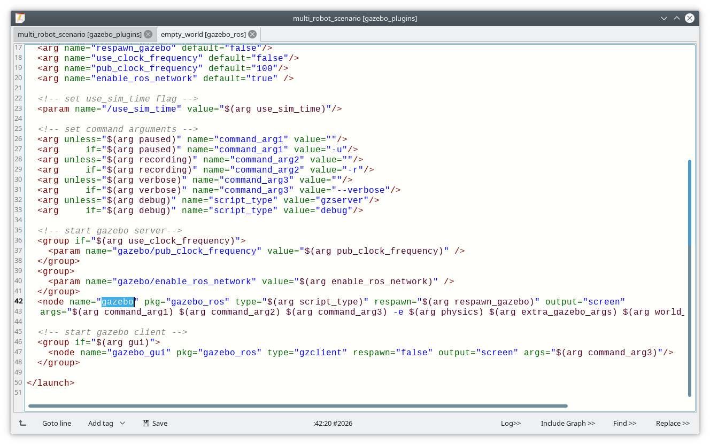
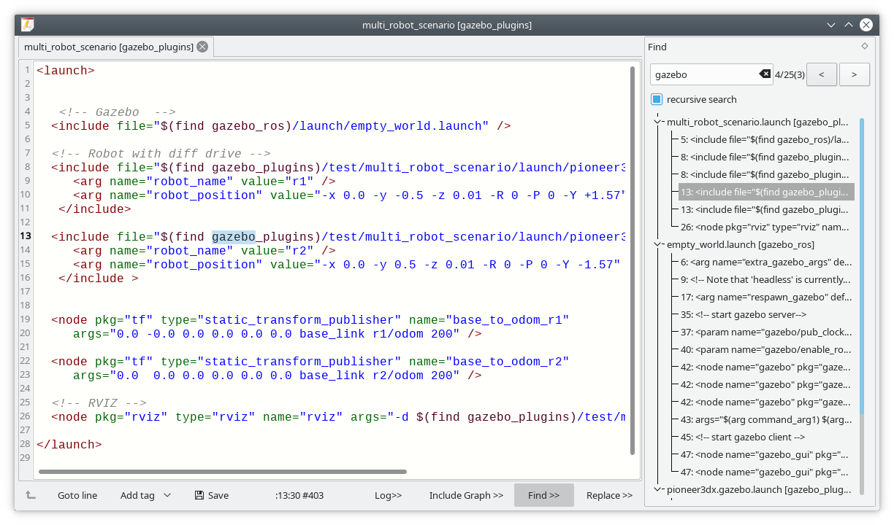
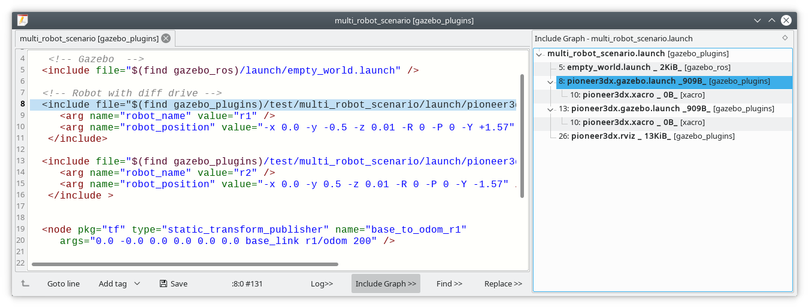

In addition, the included files are open in a new tab by Ctrl+(left mouse click). If the file does not exists, it will be created. Of course, only if it is desired.A file can be included by Drag and Drop.
It is also possible to add a template of a launch tag by using the Add tag button. Or you can press right mouse button to get a context menu with possible tags or attributes. (Currenty there is no context menu if you are in launch group)
You can also search in included files using the find dialog:  Double click on the file in the find dialog opens the file.
Include Graph shows an overview of all included files: 